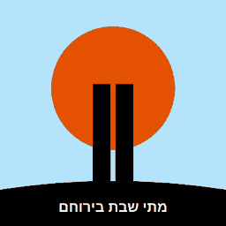

אודות
מתי שבת בירוחם
מה זה
זמני כניסת ויציאת שבת בירוחם, במסך אחד ובלי חיפושים. האפליקציה מציגה את זמני השבת הקרובה ואת השבתות שאחריה: הדלקת נרות, שקיעה, צאת השבת וזמן רבנו תם.
כיצד מחושב?
הזמנים אינם מחושבים כאן. הם מועתקים כלשונם מתוך לוח הדלקת נרות שבת וחג בעריכת הרב אודי רט, שנערך עבור ירוחם. האפליקציה היא דרך נוחה להציג את אותו לוח, ולא מקור עצמאי.
מכאן נובע גם שהזמנים מיועדים לירוחם בלבד. ביישוב אחר, אפילו סמוך, הם יהיו שונים — ואין להסתמך עליהם שם.
התקנה
אפשר להוסיף את האתר למסך הבית ולהשתמש בו כאפליקציה, גם בלי חיבור לאינטרנט: באנדרואיד יוצג כפתור התקנה, ובאייפון דרך תפריט השיתוף ← "הוספה למסך הבית".
אפליקציית אנדרואיד נמצאת בשלב בדיקות סגור. אפשר להירשם כבודק/ת ולקבל אליה גישה.
האייקון
פסל הזהות של ירוחם, והשמש ששוקעת מאחוריו.
הבהרה
למרות שהזמנים נלקחים מהלוח ונבדקים, ייתכנו טעויות. בכל שאלה הלכתית או במקרה של ספק — יש להכריע לפי הלוח המודפס ולפי רב הקהילה.